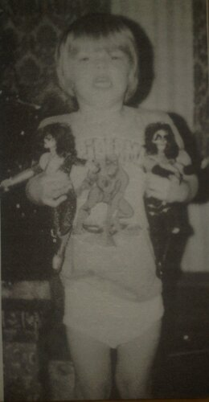

Книги
КнигиГлава 4
Перевод Тани (Dark Bird) для VSplanet.net
Только значительно позже я заметил, что наше материальное положение было намного хуже, чем у других людей. У моих друзей, к которым я ходил в гости после школы, были красивые большие дома. Оттуда я возвращался в нашу квартиру по шаткой старой лестнице с заднего двора. Это не был типичный жилой дом. Там было лишь три квартиры. И почему-то наша ванная имела вторую дверь, которая открывалась в коридор здания, через который другие жильцы заходили в свои квартиры. Странная планировка.
У нас также не было душа. Вместо этого у нас была старая кривоногая ванна. Вообще помню, в этой квартире было довольно много классических элементов, которые с надлежащими деньгами могли бы выглядеть солидно. Однако у нас не было таких денег. Мы боролись изо всех сил, чтобы платить аренду. Я уверен, что иногда мы попадали в долги, чтобы я мог поесть, но моя мама всегда продолжала бороться. Она была слишком упрямой, чтобы уступить (я знаю, от кого я получил эту черту).

Самый счастливый ребёнок во всём Оранджвилле.
Когда я начал сравнивать то, как я жил, и как жили некоторые из моих друзей, я начал обращать внимание на некоторые различия. Я начал задавать вопросы моей маме. Как бы там ни было, я регулярно получал игрушечные фигурки KISS на Рождество или вратарскую клюшку Sherwood на день рождения, и тем не менее я всё равно задавался вопросом, почему Санта принес «богатым детям» больше. Представьте себе, каково матери-одиночке, разрывающейся между двумя работами — секретарем и официанткой, — пытаться ответить на это. Помню, я как-то выдал фразу: «Как бы я хотел жить где-то в другом месте». Боже, как же должна она была себя чувствовать; я и по сей день все еще корю себя за все те фразочки.
Так или иначе, я верил, что дети, которые жили в отдельных домах, были чем-то лучше меня. Может быть, отсюда пришла моя застенчивость. Это удивительно, что кажется важным, когда вы маленький ребенок. Дошло до того, что я стремительно пробегал в конец аллеи к старой лестнице, только так никто не мог увидеть, где я живу (будто все смотрели, или это их волновало). Это было глупо с моей стороны, и я знаю, что это причиняло боль моей маме (прости, мам). Она старалась сводить концы с концами, старалась сделать из меня хорошего человека. К счастью, я усвоил урок (я думаю). Как я уже говорил раньше, когда речь идет о любви, я никогда не был обделён. Она была в состоянии обеспечить меня Человеком-Пауком, KISS и едой на столе, но только не роскошным домом, который был у других детей. Как это ни странно, думаю, это на самом деле помогло сформировать автора этих строк, и научило меня не принимать ничего на веру.